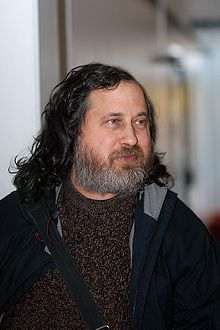

Richard Matthew Stallman ABD'li özgür yazılım aktivisti, sistem uzmanı ve yazılım geliştiricisi. GNU Projesi ve Özgür Yazılım Vakfı'nın kurucusudur.
Eylül 1983'de, Unix-benzeri işletim sistemi oluşturmak amacıyla işletim sistemi çekirdeği (kernel) hariç bir işletim sistemi için gerekli olan tüm yazılımları içeren dev bir özgür yazılım koleksiyonu olan GNU Projesi ni hayata geçirmiştir. 70'lerin sonu ve 80'lerin başında MIT'de AI (Yapay Zekâ) konusunda çalışmalar yaptığı sırada mesai arkadaşlarının geliştirdikleri yazılımların kaynak kodlarını ticaret amacıyla kapatmalarına karşı isyanı bugüne kadar devam etmektedir.
Stallman, açık kaynak kodlarının gizlenerek ticarileşmesinin yerine herkesin daha cok katkıda bulunabileceği bir sistem oluşturmak için GPL (GNU General Public Licence) lisans altyapısını öne sürmüştür. GPL lisansı ile hem son kullanıcı hem de yazılım geliştiriciler açısından daha faydalı ve verimli bir yazılım ortamı amaçlanmıştır.
Özgür Yazılım Vakfı'nın yaygınlaştırdığı GPL gibi özgür lisanslama yöntemleri ADSL Modemler, Wireless (Wifi) cihazların ("Embedded Linux" gibi uygulamalar sayesinde) üst düzeyde performansı en hesaplı şekilde sunmasını sağlamıştır. Bu bağlamda Internet protokolü yazılımlarının (örneğin "TCP/IP Stack") 90'lı yıllarda Internet'in patlamasına yol açması gibi günümüzde ADSL, WiFi, GPRS/EDGE/3G cihazlarının milyarlarca insan tarafından benimsenip kullanılmasının da teknolojilerin özgür şekilde geliştirilip herkese açık şekilde sunulması sayesinde gerçekleşmiş olduğundan bahsedilebilir.
Özgür Yazılım Vakfı donanım parçalarını birbirine bağımlı kılacak şekilde üreten üreticilere karşı da harekete geçmiştir.
Şubat 2011 tarihlerinde yedincisi düzenlenen Bilgisayar Mühendisliği Öğrencileri Kongresi'nde bir konuşma yapmak üzere Yeditepe Üniversitesi Bilgisayar Topluluğu'nun davetlisi olarak Türkiye'ye geldi. Bu ziyaretinde 26 Şubat 2011'de Yeditepe Üniversitesi'nde, 27 Şubat 2011'de de Ankara'da bir konuşma yapmıştır.
27 Şubat 2015 ve 2 Mart 2015 tarihleri arasında İstanbul ve Ankara'da gerçekleştirilen üç etkinliğe katıldı. Stallman Mart 2015'te tekrar geldiği Türkiye'de bu üç etkinliğin ardından Ankara Üniversitesi tarafından 11.si düzenlenen Bilgisayar Mühendisliği Öğrencileri Kongresi'nde de 6 Mart 2015 tarihinde konuşmacı olarak yer aldı. Geri dön...